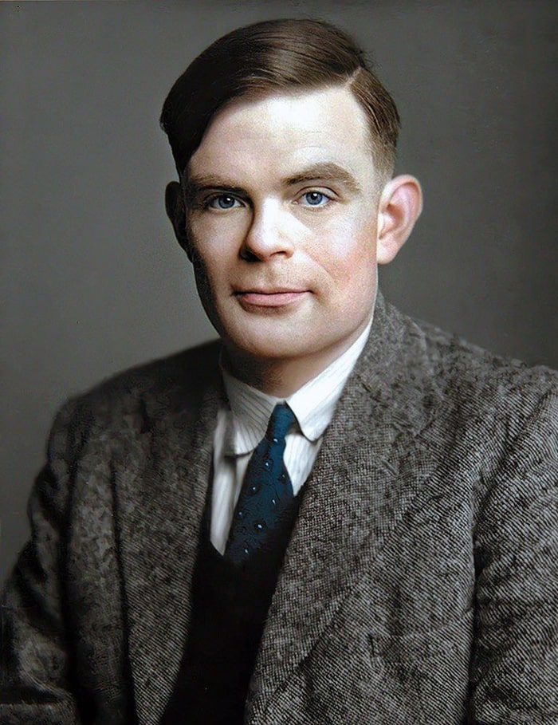

Научное исследование А. Тьюринга
Введение
Научное наследие Алана Тьюринга, выдающегося ученого XX века, представляет собой ценный и актуальный объект исследования. А. Тьюринг оказал огромное влияние на различные области науки и технологии, от математики и компьютерных наук до криптографии и искусственного интеллекта. Его идеи и открытия не только сыграли ключевую роль в развитии современной вычислительной техники, но также продолжают вдохновлять ученых и исследователей в поиске новых знаний и инноваций. Целью данного исследования является всестороннее изучение научного наследия Алана Тьюринга и выявление его вклада в различные области науки и технологии. В рамках данного исследования будут поставлены следующие задачи: Анализ исторического контекста: Исследование исторического контекста, в котором деятельность Алана Тьюринга принесла наибольший вклад. Будут рассмотрены его работа во время Второй мировой войны в области криптографии, а также его вклад в развитие математики и логики. Исследование универсальной машины Тьюринга: Изучение работы Алана Тьюринга в области формальных систем и разработки универсальной машины Тьюринга. Будут рассмотрены основные принципы работы универсальной машины и ее значение в развитии компьютерных наук. Роль Тьюринга в развитии искусственного интеллекта: Анализ вклада Алана Тьюринга в развитие искусственного интеллекта. Будут рассмотрены его идеи и концепции, включая понятие "Теста Тьюринга", и их влияние на развитие этой области. Влияние Тьюринга на современность: Изучение последствий и влияния научного наследия Алана Тьюринга на современную науку и технологии. Будут рассмотрены примеры применения.
Биография Алана Тьюринга
 Алан Мэтисон Тьюринг родился 23 июня 1912-го года в Лондоне. Его родителями были Юлиус и Этель Тьюринги, которые являлись потомками известных дворянских семей. О том, что у Алана есть определённые таланты, было ясно еще в его детстве. В шесть лет Алан уже смог самостоятельно овладеть техникой чтения, настаивал, чтобы ему предоставляли научные книги. Когда ему было одиннадцать, он занимался химическими опытами. Особенно его интересовал процесс добычи йода из морских водорослей. Однажды Алан смог добыть к чаю дикого меда, он просто проследил за траекторией полета отдельных пчел и сумел вычислить точку, в которой находится пересечение этих траекторий. Именно в этом месте он и обнаружил гнездо с мёдом.
В четырнадцать лет Тьюринг поступил в школу, предназначенную для мальчиков-аристократов, считавшуюся очень престижной. Однако его успехи оказались весьма посредственными, поскольку его абсолютно не интересовали гуманитарные науки. В классном журнале у него стояли сплошь неудовлетворительные оценки, но математика была исключением - в математике он опережал всех. Выдающиеся математические способности Алана проявились в том, что он смог сам понять теорию относительности Альберта Эйнштейна, и даже обратить внимание на проблемы, ускользнувшие от внимания самого автора данной теории.
Научные вклады

Исследование универсальной машины Тьюринга Одной из наиболее значимых и революционных работ Алана Тьюринга является его исследование в области формальных систем и разработка концепции универсальной машины Тьюринга. Универсальная машина Тьюринга является вычислительным устройством, способным эмулировать любую другую вычислительную машину. Она основывается на принципах абстрактной машины, которая может выполнять различные операции и операции по условию. Идея универсальной машины Тьюринга оказала огромное влияние на развитие компьютерных наук. Она стала фундаментальной основой для разработки архитектуры и программного обеспечения современных компьютеров. Концепция универсальной машины Тьюринга позволила ученым понять, что все вычисления могут быть сводимы к набору простых операций, которые можно выполнить на такой машине. Это открыло путь к развитию алгоритмов и программирования, а также способствовало разработке теории вычислимости и вычислительной сложности. Универсальная машина Тьюринга также имеет глубокие философские и концептуальные последствия. Она подняла вопросы о возможности создания машины, способной имитировать человеческое мышление и интеллект. Тьюринг предположил, что если машина может проходить Тест Тьюринга, то можно считать, что она обладает интеллектом. Этот идеальный интеллектуальный эксперимент стал отправной точкой для развития искусственного интеллекта и стимулировал дальнейшие исследования в области создания интеллектуальных машин. Работа Тьюринга по универсальной машине имеет далеко идущие последствия не только для компьютерных наук, но и для философии, теории информации и теории вычислений. Его концепции и идеи вдохновляют ученых и инженеров по всему миру, а его работа по созданию универсальной машины является фундаментальной основой для современных вычислительных систем и алгоритмов.
Заключение
Алан Тьюринг оставил неизгладимый след в научном и техническом мире. Его научное наследие в области исследования искусственного интеллекта, компьютерных наук, криптографии и вычислительной теории продолжает оказывать влияние на современность. Его работа по универсальной машине Тьюринга и концепции алгоритмов стала фундаментальной основой для разработки компьютерных систем и программного обеспечения. Тьюринговские идеи лежат в основе современных компьютеров и информационных технологий, позволяя нам выполнять сложные вычисления и обрабатывать огромные объемы данных. В области искусственного интеллекта его работы в области машинного обучения и Теста Тьюринга стали отправной точкой для развития ИИ. Сегодня мы видим все большее внедрение ИИ в различные сферы нашей жизни, что открывает новые возможности и вызывает новые вызовы. В области криптографии, Тьюринг разработал методы и алгоритмы, которые до сих пор являются основой для защиты информации и обеспечения кибербезопасности. Его вклад в эту область стал фундаментальным для развития современных криптографических систем. Тьюринг также оказал влияние на развитие математики, логики и вычислительной теории. Его исследования и концепции помогают нам понять основы вычислений, разрабатывать новые методы решения сложных проблем и понимать границы и ограничения вычислений.
В целом, научное наследие Алана Тьюринга остается актуальным и важным в современном обществе. Его работы и идеи продолжают вдохновлять ученых и исследователей, открывая новые горизонты в науке, технологиях и практических приложениях. Без его вклада, современный мир информационных технологий, искусственного интеллекта и криптографии не мог бы быть таким, каким мы его знаем сегодня.
Машина Тьюринга в двух словах